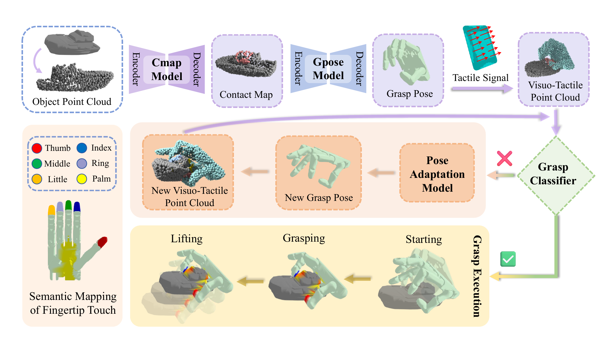
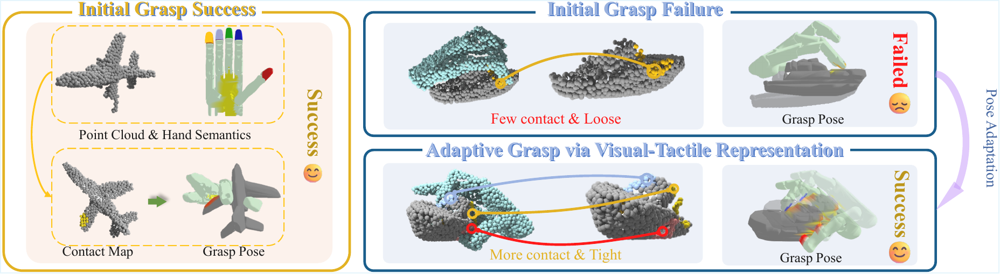
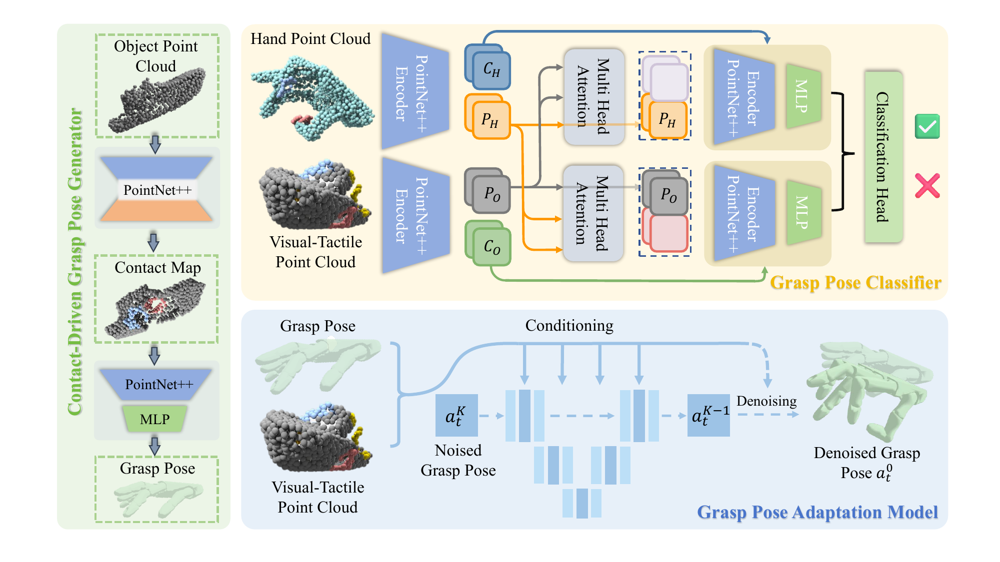
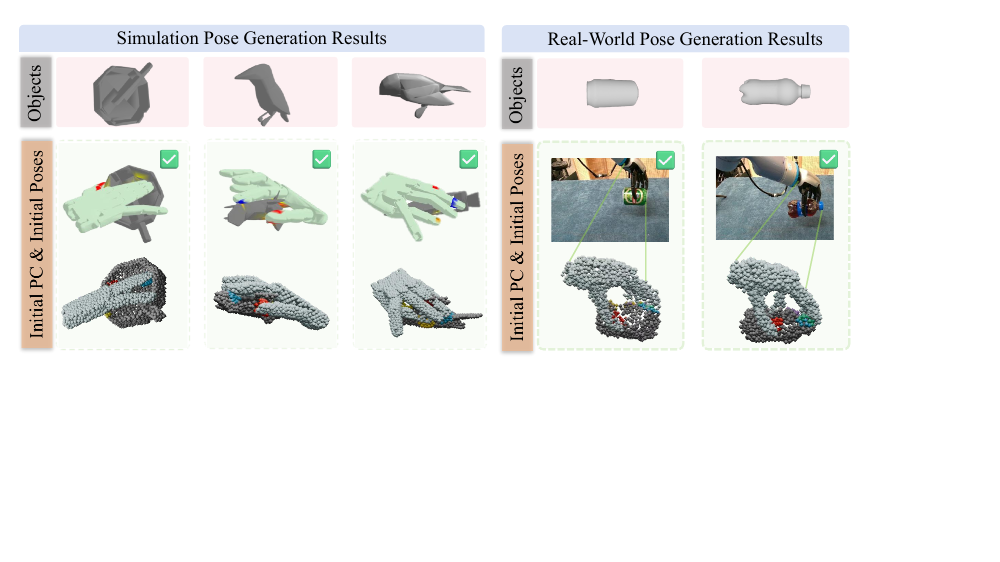
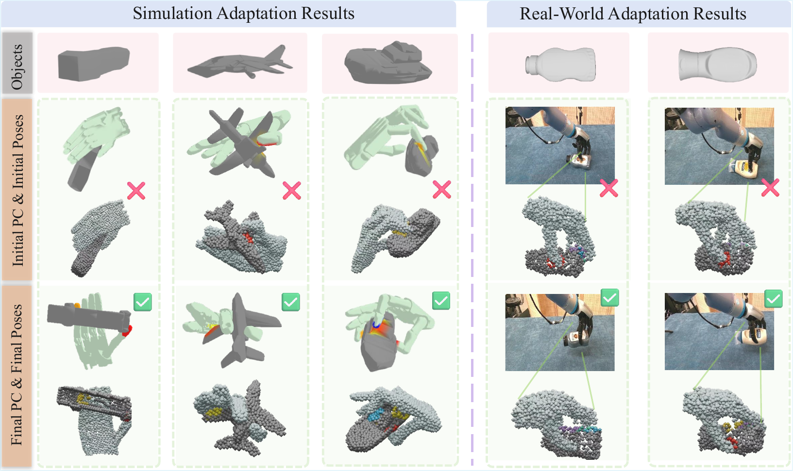

Pipeline

ECCV 2026
¹ Peking University ² HKUST ³ UC Berkeley





| Method | Seen Objects | Unseen Objects | Unseen Categories |
|---|---|---|---|
| UniDexGrasp++ | 55% | 49% | 42% |
| DexGraspAnything | 77% | 72% | 67% |
| DexDiffuser | 71% | 69% | 55% |
| UniDexGrasp (PPO) | 52% | 46% | 40% |
| Robot Synesthesia | 33% | 29% | 22% |
| Intuitive Closed-Loop | 76% | 71% | 65% |
| ContactDexNet | 72% | 68% | 63% |
| DexGraspVLA | 69% | 60% | 58% |
| UniDexGrasp-CL | 59% | 52% | 46% |
| DexDiffuser-VT | 75% | 71% | 57% |
| Ours | 91% | 82% | 83% |
| Method | Seen Objects | Unseen Objects | Unseen Categories |
|---|---|---|---|
| w/o contact id in adaptation | 84% | 72% | 73% |
| w/o contact id in generation | 79% | 75% | 69% |
| w/o adaptation | 81% | 78% | 59% |
| Object-only | 72% | 67% | 61% |
| Full Point Cloud w/o tactile | 78% | 74% | 67% |
| w/o PC | 74% | 71% | 64% |
| Ours | 91% | 82% | 83% |
@misc{liang2026adadexgraspadaptivedexterousgrasping,
title = {AdaDexGrasp: Adaptive Dexterous Grasping via 3D Visuo-Tactile Representation Fusion},
author = {Xirui Liang and Jiaqi Liang and Jingkai Xu and Yuran Wang and Ruochong Li and Yuanpei Chen and Masayoshi Tomizuka and Wei Zhan and Ruihai Wu},
year = {2026},
eprint = {2608.07600},
archivePrefix = {arXiv},
primaryClass = {cs.RO},
url = {https://arxiv.org/abs/2608.07600}
}